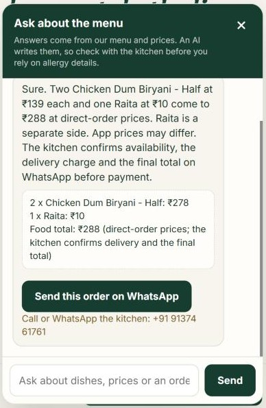

Live AI assistant · since Nov 2026
A menu assistant that answers customers and prices their order
Customers of Dum Biryani Rasoi, the delivery kitchen I run in Andheri West, ask about prices, portions, spice and delivery before they order. The assistant on dumbiryanirasoi.in answers from the real menu of 79 dishes. When a customer lists what they want, code adds up the order and opens WhatsApp with it typed out. The order reaches the kitchen without a delivery app.
- The model only writes the reply. Code checks that every dish it names is on the menu and every price matches. Code also prices the order and builds the WhatsApp link.
- 29 of 29 evaluation questions pass against the live website, with a median reply time of 1.9 seconds. The cases cover prices, portions, delivery areas, allergies, dishes we do not make and a prompt injection.
- I first built it in Python with a vector search index (BGE small and FAISS) and a webhook in n8n. For the website I put the whole menu in the prompt instead, because 79 dishes fit in about 6,200 tokens. The checks stayed the same.
- Each visitor has a rate limit, the site uses its own API key with a spending cap, and no customer message is stored.
Next.js · TypeScript · Claude Haiku 5.5 · OpenRouter · Python · FAISS · n8n · Vercel

A live reply on 20 Nov 2026. The order summary and the WhatsApp button come from code, not from the model.